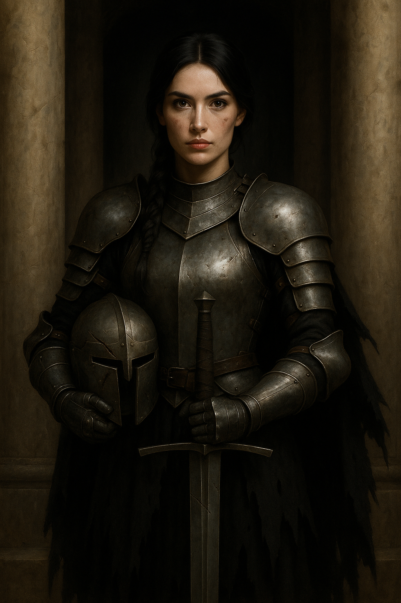

Dibalik pilar batu yang membisu,
Berdirilah ia, sang ksatria waktu.
Yang bukan hanya menjaga,
tapi juga lupa cara mencinta.
Berselimut baja, memeluk sunyi.
Ia berdiri, serupa janji yang tak kunjung usai.
Ketika kau melangkah mendekatinya,
Jangan bawa bait, jangan bawa tanya.
Karena matanya tak menunggu bait,
Hanya menanti jiwa yang siap memeluk sakit.
Karena yang yang menatap dibalik helm berkarat,
Bukan telinga yang mencari makna,
Bukan jiwa yang mengerti hikayat.
Di dunia ini,
Ada lidah lidah yang membatu.
Tak mengerti liris, tak peduli rindu.
Di dunia ini,
Ada jiwa jiwa yang tak kenal lagi lembut.
Tubuhnya ditempa oleh amarah
serta dendam yang akut;
Hatinya terkunci, tak kembali,
Tak sempat menyambut.
Yang dikenalnya,
hanya gemercik api dari benturan logam.
Bukan getarnya hati yang lembut diam.
Di hadapan mereka, kata hanyalah debu.
Tak ada puisi yang bisa menebus ragu.
Yang bicara adalah luka yang tak menyerah.
Yang berdansa hanya bilah yang haus darah.
Bunga kata tak tumbuh di padang besi.
Disana, setiap janji luruh menjadi sunyi.
Percuma berseru tentang cinta , empati, nurani;
Pada mereka yang hidup mengasah diri.
Pada mereka yang membungkam hati sendiri.
Pada mereka yang tak mengenal arti.
Jikalau kau bertemu ksatria semacam itu;
Tarik pedangmu, jangan berlambat ragu.
Karena di hadapan mereka yang buta rasa,
Bahasa hanyalah sia sia.
Mereka tak mengerti irama lara,
Hanya paham luka yang membuka dada.
Mereka tak mendengar bisik harapan,
Hanya mengenal tebasan dan kehancuran.
Biarlah kata kita berdiam dalam hati,
Jangan paksa ia diterima di padang besi.
Karena kepada pedang, puisi tak berarti.
Karena bagi baja, cinta hanyalah mimpi.
Apabila engkau jatuh cinta pada sosok itu,
Pahamilah; tak semua kasih butuh suara,
Tak semua hati luluh oleh kata.
Cintailah ia tanpa kata kata.
Dampingi ia tanpa tanya.
Biarlah cintamu berdiri di sisinya,
seperti bayangan yang tak memaksa,
seperti senja,
yang hanya ingin melihatnya pulang.

VESPER SUB FERRO
Twilight beneath the steel
Pilar pilar batu berdiri angkuh laksana saksi bisu.
Dan dihadapannya, kau berdiri.
Lusuh, lelah, tetapi tetap tegak.
Engkau muncul dari gelap,
Seperti mimpi yang lelah ditunggu.
Sosok tak bernama,
Tak pula mengenal makna.
Tubuhnya, berat oleh lapisan baja.
Wajahnya, dilukis oleh luka lama.
Tatap matanya, tak asing pada air mata.
Dibalik karat helm yang tak pernah bicara,
Nafasnya; dalam.. membisik sisa nyawa.
Dalam genggamannya, sebuah pedang
yang lebih tajam dari ucapan manusia.
Ia genggam, bukan untuk melukai.
Tetapi untuk melindungi,
dirinya sendiri dari kejamnya dunia.
“Aku datang, ingin berbicara…”
Ucapmu, bodoh.
Ia terdiam.
Tak ada gerak, tak ada reaksi.
Tak marah, tak pula iba.
Hanya terdiam.
Laksana pilar batu dibelakangnya.
Laksana malam yang lupa pulang.
Tetapi; kau tau bahwa hatinya,
Tak sepenuhnya mati.
Hanya terkunci,
Dibalik semua baja dan besi.
“Dan aku datang membawa maaf..”
lanjutmu, lebih bodoh lagi.
Helaan nafasnya berat, selain karena lelah,
Juga karena tak pernah diajari memahami makna.
“Aku juga membawa luka,
yang ingin kau kenali.”
Ucapmu pelan.
Matanya sedikit bergeser,
Dan itu sudah cukup bagimu.
Cukup untuk tau; bahwa ia mendengarmu,
meski dunia tak pernah mengajarinya cara menjawab.
Di dunia tempatnya berdiri,
kata kata telah lama mati.
Yang berbicara hanya luka.
Yang berdansa hanyalah bilah.
Maka jangan harap kau dipahami.
Jangan harap kau dimengerti.
Karena sesekali, kau bertemu makhluk
yang tak diciptakan untuk mendengarkan.
Hanya untuk bertarung.
Dan pertarungan tak butuh kata.
Tetapi,
Engkau tetap tegak berdiri.
Tanpa pelindung, tanpa perisai.
Karena terkadang;
Cinta yang paling kuat,
Justru datang dari mereka
Yang tak pandai berbicara.
Ia mengangkat pedangnya.. perlahan.
Bukan untuk mengayun dan menusuk;
Tetapi mengistirahatkannya di tanah,
Diantara kalian berdua.
Lalu ia berdiri, terdiam.
Menatapmu. Lama. Tanpa suara.
Dan tangannya pun terangkat..
Suara logam yang bergeser pelan,
Membuka helm yang terlalu lama
Menyembunyikan dirinya dari dunia.
Ketika helmet itu terangkat,
Dan wajahnya terlihat, luka luka lama
Yang membentuk jejak di pipinya.
Kau melihat wajah yang tak asing;
Bukan karena kau mengenalnya,
Tetapi karena luka lukanya
Seperti milikmu sendiri.
Seketika, tatapan matanya..
Kini berubah.
Tak lagi dingin, tak lagi tajam.
Seperti seseorang yang lupa
bagaimana rasanya dilihat,
Lalu tiba tiba,
Dilihat.
Tak ada sepatah kata.
Tak perlu ada.
Karena terkadang,
Sepasang mata mampu berkata,
Lebih dari ribuan bait yang pernah tercipta.